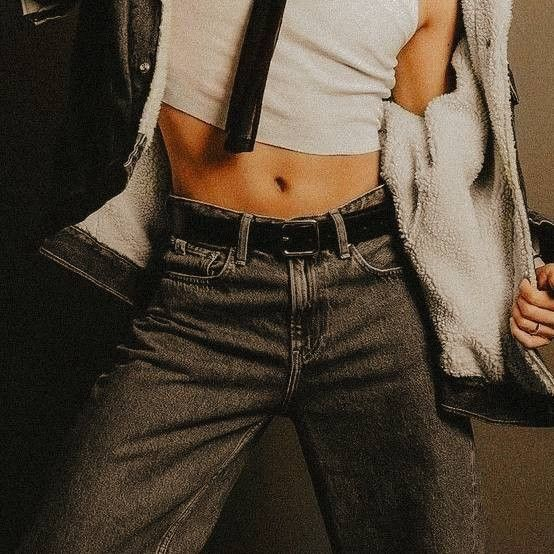

—Tenemos inglés juntos —dijo, con naturalidad—. Soy Taehyung.
Jungkook dudó un segundo antes de tomar su mano.
Se soltaron.
Pero Taehyung no dejó de mirarlo.
Y eso… lo ponía nervioso.
Jungkook bajó la mirada.
Inquieto.
Avergonzado.
—Una persona que le dice “zorra” a otra… tiene un 90% más de probabilidades de tener clamidia.
Jungkook lo miró, sorprendido.
—¿En serio?
—No. Pero estaría bueno que fuera verdad.
Taehyung sonrió.
Jungkook no pudo evitar sonreír.
Por primera vez en toda la noche.
Se quedaron en silencio unos segundos.
Mirándose.
Hasta que—
Taehyung simplemente se fue.
Sin explicación.
Dejándolo ahí.
Con algo raro en el pecho.

Kim Taehyung (22 años)
Taehyung es alguien que transmite seguridad desde el primer momento. Sabe lo que dice, cómo lo dice, y
no duda en hacerlo.
Tiene una presencia fuerte, directa, difícil de ignorar.
No necesita llamar la atención… simplemente la tiene.
Es observador, inteligente y tiene una forma particular de ver el mundo, como si siempre estuviera un
paso más allá.
Le importa la gente, lo que pasa alrededor, y suele decir las cosas sin filtro, pero sin intención de
herir.
Siempre intenta mostrar su mejor versión, incluso cuando las cosas no son tan simples.
Y aunque pueda parecer relajado o incluso irónico, hay una profundidad en él que no todos llegan a ver.